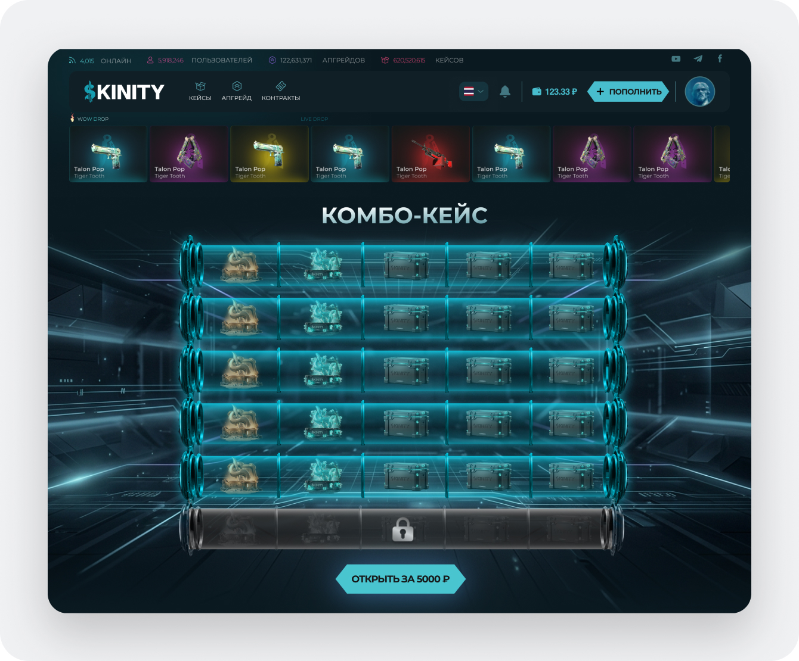
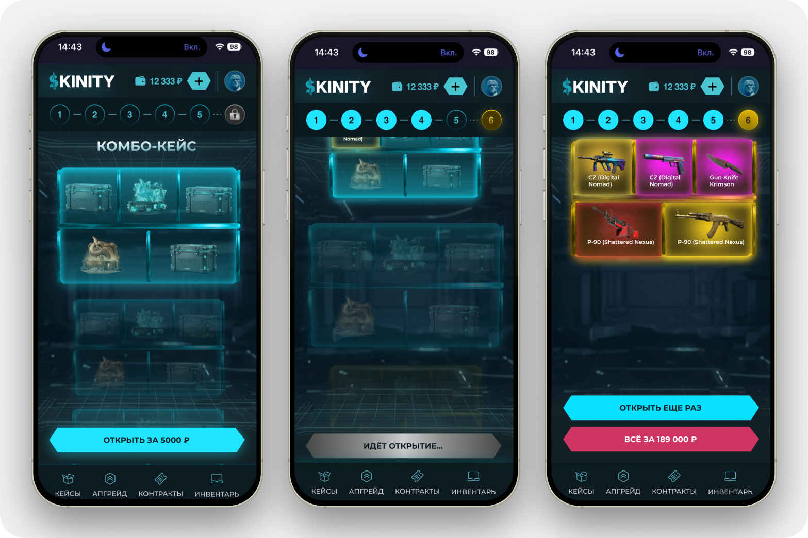
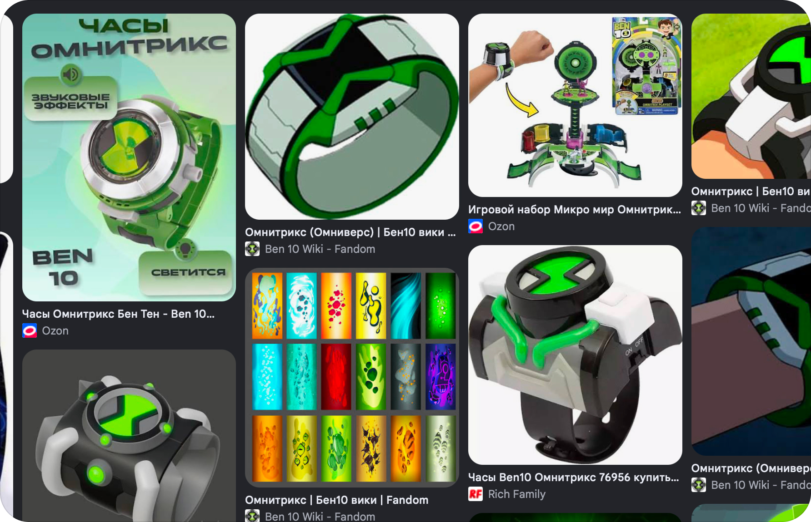
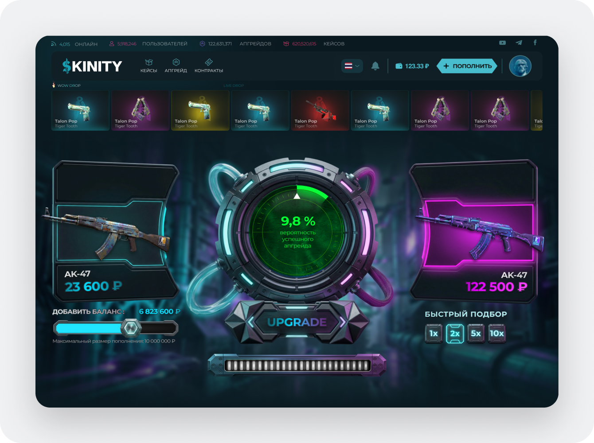
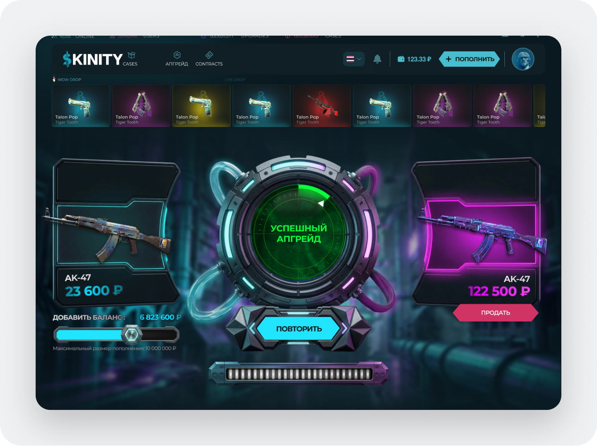
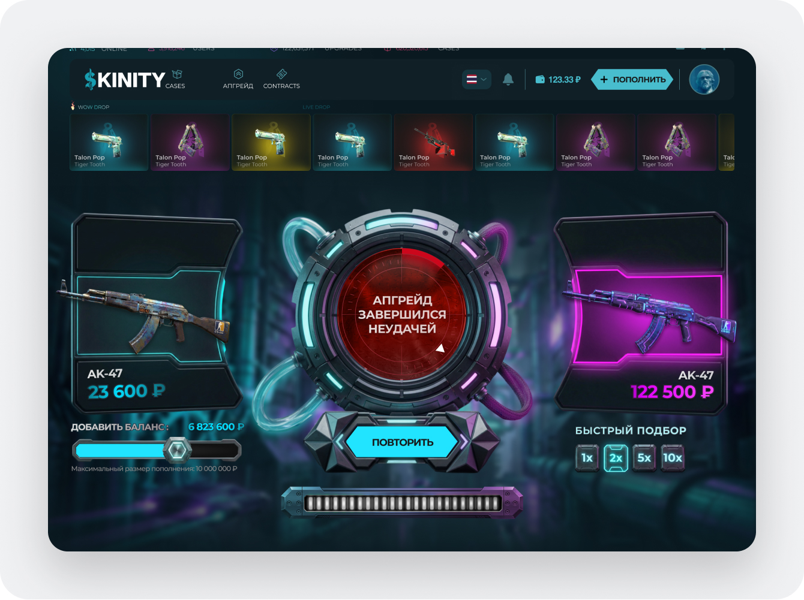
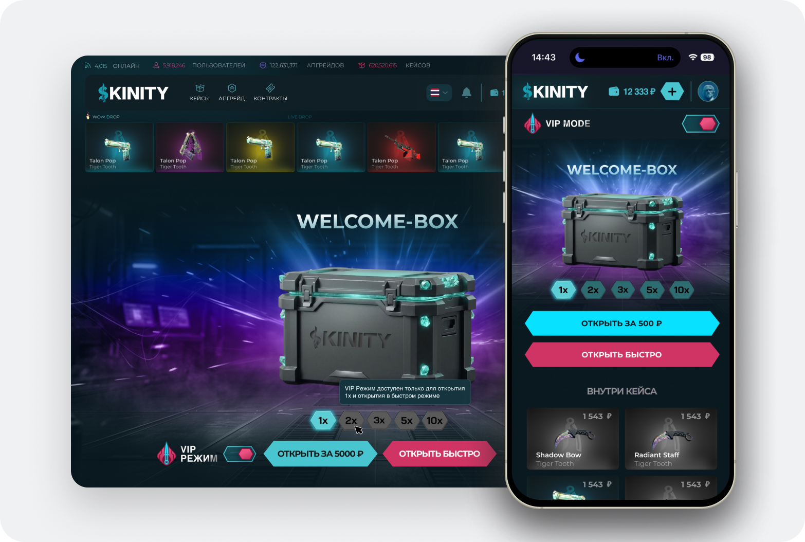
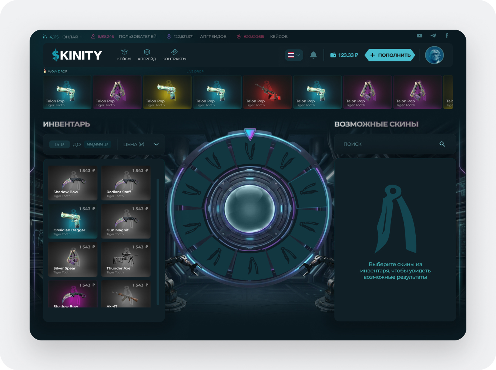
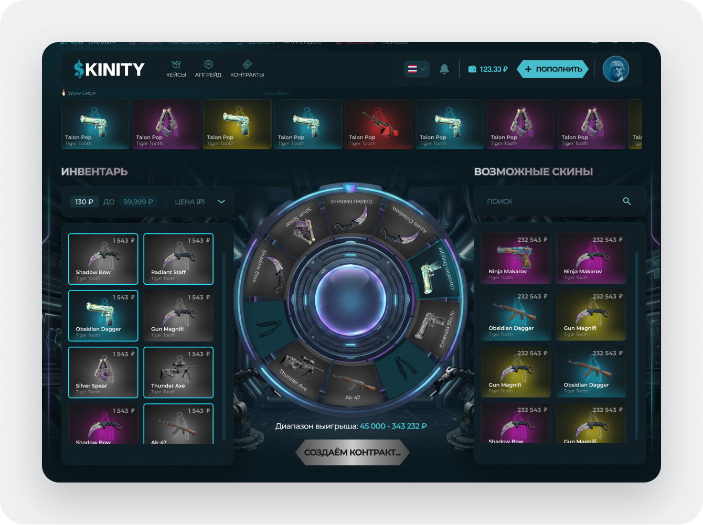
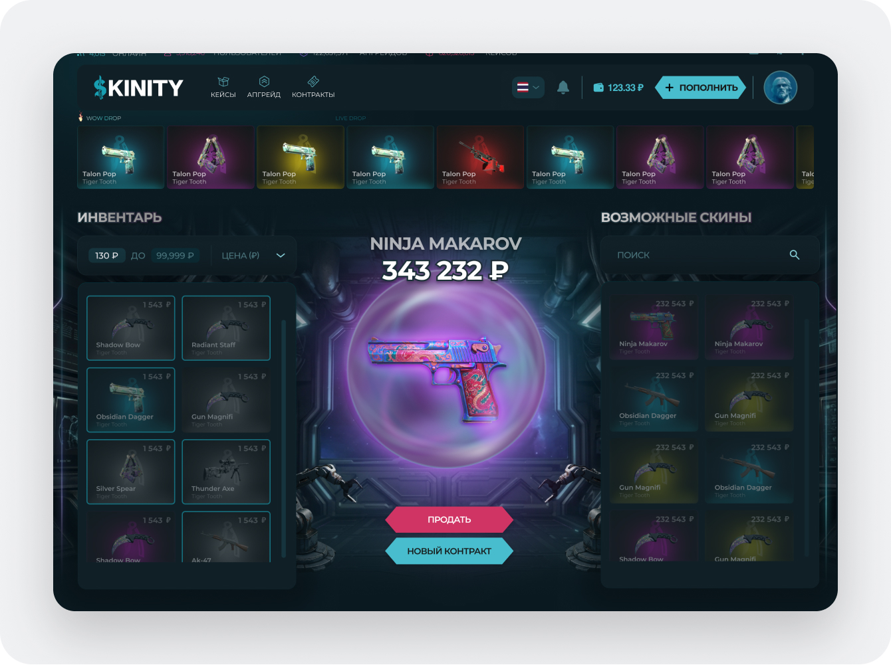

Skinity: геймификация кейсов, контрактов и апгрейдов скинов
Проектирование платформы открытия кейсов и кастомизации: как я адаптировала сложные игровые механики под мобильные экраны, внедрила прогресс-бары для многошаговых открытий и перевела референс часов Омнитрикса в функциональный UI.
Комбо-кейсы: адаптация батареи открытий под мобилку
На десктопе комбо-кейсы жили отлично: широкий экран позволял легко разместить всю батарею кейсов в ряд, и человек сразу видел весь процесс открытия от начала до конца.
Но когда дело дошло до мобилки, возникла проблема: на маленьком экране невозможно уместить горизонтальную батарею так, чтобы не превратить интерфейс в нечитаемую кашу.
Чтобы человек не терялся и понимал, на каком он этапе, я добавила сверху понятный прогресс-бар. При открытии кейсов контейнеры со скинами динамически подтягиваются снизу вверх, а полоска вверху наглядно показывает, сколько шагов еще осталось до финала.

На широком экране все слоты открытия видны одновременно, сохраняя полный контекст комбо-сессии.

Вверху закреплен индикатор этапа открытия, а выпадающие скины плавно подтягиваются снизу экрана, не перегружая пальцевую зону.
Механика апгрейда: от часов Омнитрикса к рабочему интерфейсу
Заказчик пришел с необычным запросом: он хотел, чтобы экран апгрейда скинов визуально напоминал часы Омнитрикс из мультфильма «Бен-10».
Я пошла изучать референсы, разобрала круговой циферблат и свечение оригинальных часов и переосмыслила их под строгий темный стиль нашего продукта. В итоге получился круговой механизм шанса, где четко считываются состояния успеха и неудачи:

Оригинальная идея циферблата с поворотным кольцом выбора и световой индикацией готовности.

Круговой радиальный селектор: игрок выбирает исходный предмет и целевой скин, а стрелка наглядно отмеряет сектор вероятности успеха.

Стрелка останавливается в победном секторе: акцентная анимация свечения и карточка полученного редкого скина.

Стрелка уходит в серый сектор: интерфейс деликатно сообщает о проигрыше предмета и предлагает кнопку быстрого повтора или выбора нового скина.
VIP-режим: преемственность айдентики
Для пользователей с VIP-статусом требовалось выделить специальный режим эксклюзивных кейсов. Чтобы сохранить преемственность бренда, я нарисовала фирменную иконку VIP-режима, аккуратно зарифмовав ее с геометрией основного логотипа сервиса.

Премиальная темная цветовая гамма, акцентный бейдж и золотые акценты, органично встроенные в общую дизайн-систему.
Контракты: обмен 10 скинов на один редкий
Контракты позволяют игрокам сдать накопившийся дроп в обмен на один случайный предмет более высокого качества. Я разложила этот сценарий на три понятных шага:

Инвентарь с быстрым чеклистом: пользователь заполняет слоты контракта (от 3 до 10 скинов), видя суммарную стоимость и возможный диапазон выигрыша.

Интерактивный экран «подписания»: визуальный эффект смешивания предметов с нарастанием интриги перед финальным выпадением.

Карточка полученного ценного скина с моментальным выбором: забрать предмет в инвентарь или сразу отправить в новый контракт.